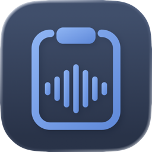

ClipSpeakYour clipboard manager with dictation, text recognition and Apple Intelligence – all local on your Mac.
For macOS 26 · English & GermanText, images, links, files and colors are instantly back. One shortcut opens the history at your pointer.
Capture an area or window, recognize text and QR codes and copy them right away.
Speak instead of typing – right at the cursor, with recognition running on your device.
Summarize, translate, rephrase – with Apple’s language model on your Mac.
Questions, bugs or ideas? Write to me: info@joshkalb.com
Where is the Dock icon? ClipSpeak lives in the menu bar and intentionally has no Dock icon.
Screenshots don’t work after allowing Screen Recording? macOS sometimes requires an app restart – quit ClipSpeak from the menu bar icon and open it again.
Apple Intelligence actions are greyed out? They need a Mac that supports Apple Intelligence, turned on in System Settings.